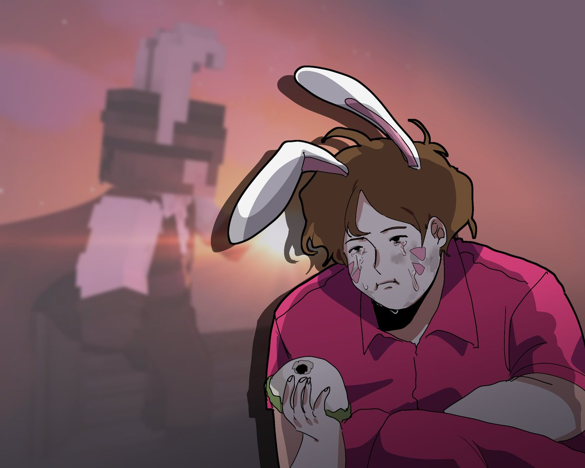

괴도p, 그는 정녕 잡을 수 없는 것인가?
괴도p가 서리사막의 심장을 가져가겠다고 으름장을 놓은 가운데, 몇 년간 그의 행방을 알 수 없었다. 항간에서는 괴도p가 다름 이름으로써 활동을 하거나 잡범 신분으로 이미 교도소에 있다고 한다.
바로 YJK교도소에 잡범으로 수감되어 있는 김*빱 재소자가 괴도p라는 설이다. 그에 대해 괴도p 담당 김*랭형사는 말을 아꼈으나 동료 재소자 미*개의 말에 따르면 교도소 내에서 김*빱 재소자의 민첩한 행동이 제법 일리가 있다는 설이다.